Architecture (Repository View)
This repository contains two governance runtime tracks:
- v1 (
apps/control-plane): FastAPI baseline and legacy reference - v2 (
apps/control-plane-v2): Rust-first hardened runtime and primary frontier path
System View

v1 Baseline (FastAPI)
Purpose: - provide a readable baseline implementation - support historical comparison and regression context
Key characteristics:
- Python/FastAPI API surface
- OPA-backed policy checks
- kill-switch and provenance primitives
- legacy route contract (/policy/check, /kill, /provenance/*)
v2 Frontier Runtime (Rust)
Purpose: - deterministic, auditable, and verifiable governance runtime
Key characteristics: - Axum + Tokio runtime - scoped JWT authz boundary - event-sourced evidence model - automatic attestation for allowed decisions - interop endpoints for MCP and A2A - release-gated quality and regression suites
See Architecture v2 for full detail.
Control Model
Core governance controls that apply across both tracks: - explicit authorization before tool execution - operator kill-switch override - provenance generation and verification - audit trail for incident response
Why Keep Both Tracks
- v1 offers a simple baseline for learning and diffs
- v2 offers the hardened engineering path for frontier-grade evaluation
- side-by-side implementation keeps migration and benchmarking explicit